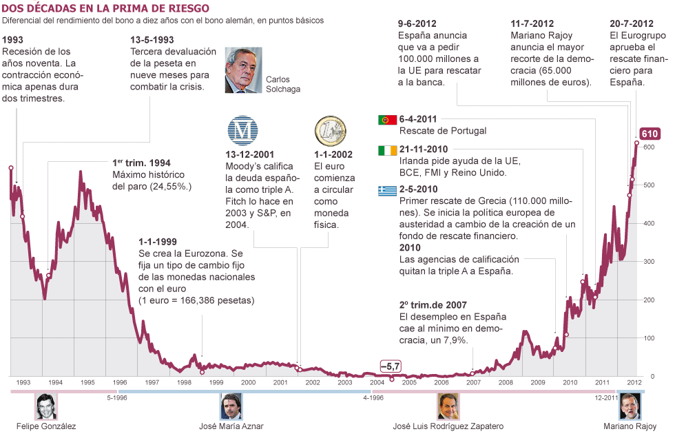

Prima de riesgo
En el mercado de deuda pública, la prima de riesgo, también conocida como diferencial de deuda, es el sobreprecio que paga un país para financiarse en los mercados en comparación con otros países. De esta forma, cuanto mayor es el riesgo país, más alta será su prima de riesgo y más alto será el tipo de interés de su deuda. Dicho de otra forma, es la rentabilidad que exigen los inversores (interés) a un país para comprar su deuda soberana en comparación con la que exigen a otros países. La prima de riesgo significa, de este modo, la confianza de los inversores en la solidez de una economía.Evolución diaria
Fuente: datosmacro.com
Evolución histórica
Fuente: elpais.com
La prima de riesgo de España, también llamada riesgo país o riesgo soberano de España, es el sobreprecio que ésta tiene que pagar cuando acude a los mercados para financiarse, en comparación con Alemania.
La prima de riesgo de Española es la diferencia entre la rentabilidad del bono español a 10 años y el bono alemán a 10 años(bund).